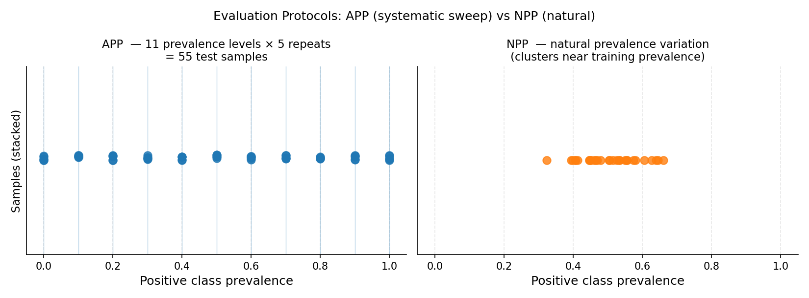

5.1. Protocols for Quantification#
Evaluating a quantifier on a single test set is misleading — the test prevalence is fixed, so you only see performance at one operating point. Quantification protocols address this by generating many test batches with varying prevalences from the same data, giving a fuller picture of method behaviour across the entire prevalence spectrum.
Why protocols matter
A quantifier that looks excellent at 50/50 prevalence may fail badly at 5/95. Forman (2005) noted that the choice of evaluation protocol is as important as the choice of method. Standard practice in quantification research is to evaluate across a grid of prevalences (APP) and report the mean error over all samples.
5.1.1. APP — Artificial Prevalence Protocol#
APP is the most widely used evaluation protocol. It draws samples
from the test set at each prevalence in a uniform grid
\(\{0, \frac{1}{n-1}, \frac{2}{n-1}, \ldots, 1\}\) for the positive
class, repeating each prevalence repeats times.
Why it is standard: APP ensures every method is evaluated at many prevalence values, not just the natural one. It exposes systematic biases (e.g. methods that only work near 50/50) and gives a fair cross-method comparison. González et al. (2017) review papers routinely use APP as the evaluation backbone.
5.1.1.1. Parameters#
Parameter |
Default |
Explanation |
|---|---|---|
|
required |
Number of instances per test sample. Larger batches give more stable prevalence estimates but require a larger test set. A typical choice is 100–500. |
|
|
Number of equally-spaced prevalence points from |
|
|
How many independent samples to draw at each prevalence level. More repeats reduce variance in the average error estimate. Use ≥ 5 for reliable results. |
|
|
Minimum positive class prevalence in the grid. Leave at 0 to include the all-negative case. |
|
|
Maximum positive class prevalence. Leave at 1 to include the all-positive case. |
|
|
Seed for reproducible sampling. |
{kind=link}

Left: APP generates test samples at every point on a regular prevalence grid (blue dots), giving systematic coverage from 0% to 100% positive class. Right: NPP draws random sub-samples that cluster near the natural training prevalence (~50%), providing realistic but narrower coverage.#
5.1.1.2. Examples#
Standard evaluation loop:
from mlquantify.model_selection import APP
from mlquantify.metrics import MAE
from mlquantify.utils import get_prev_from_labels
from mlquantify.likelihood import EMQ
from sklearn.linear_model import LogisticRegression
from sklearn.datasets import make_classification
from sklearn.model_selection import train_test_split
import numpy as np
X, y = make_classification(n_samples=2000, weights=[0.7, 0.3],
random_state=42)
X_train, X_test, y_train, y_test = train_test_split(
X, y, test_size=0.5, random_state=42)
q = EMQ(LogisticRegression())
q.fit(X_train, y_train)
protocol = APP(batch_size=100, n_prevalences=21, repeats=10,
random_state=42)
errors = []
for idx in protocol.split(X_test, y_test):
X_sample, y_sample = X_test[idx], y_test[idx]
true_prev = get_prev_from_labels(y_sample)
pred_prev = q.predict(X_sample)
errors.append(MAE(true_prev, pred_prev))
print(f"Mean MAE over {len(errors)} samples: {np.mean(errors):.4f}")
Comparing multiple quantifiers:
from mlquantify.counting import CC, PCC
from mlquantify.likelihood import EMQ
from mlquantify.matching import DyS
from sklearn.linear_model import LogisticRegression
quantifiers = {
'CC': CC(LogisticRegression()),
'PCC': PCC(LogisticRegression()),
'EMQ': EMQ(LogisticRegression()),
'DyS': DyS(LogisticRegression()),
}
for name, q in quantifiers.items():
q.fit(X_train, y_train)
protocol = APP(batch_size=100, n_prevalences=21, repeats=10,
random_state=42)
results = {name: [] for name in quantifiers}
for idx in protocol.split(X_test, y_test):
X_s, y_s = X_test[idx], y_test[idx]
true_prev = get_prev_from_labels(y_s)
for name, q in quantifiers.items():
results[name].append(MAE(true_prev, q.predict(X_s)))
for name, errs in results.items():
print(f"{name:5s} MAE={np.mean(errs):.4f}")
5.1.2. NPP — Natural Prevalence Protocol#
NPP draws random sub-samples from the test set without altering
the natural class distribution. Each sample has a slightly different
prevalence due to random variation, but no artificial manipulation is
performed.
Why it exists: NPP evaluates quantifiers under real prevalence variation — how they perform when deployed on random sub-populations drawn from the same underlying distribution as the test set. It is less controlled than APP but more realistic.
Limitation: Because NPP cannot produce extreme prevalences (e.g. 2% positive) without a very large test set, it gives a narrower view of method behaviour than APP.
5.1.2.1. Parameters#
Parameter |
Default |
Explanation |
|---|---|---|
|
required |
Size of each random sub-sample. |
|
|
Number of random sub-samples to draw. |
|
|
Seed for reproducibility. |
from mlquantify.model_selection import NPP
from mlquantify.utils import get_prev_from_labels
protocol = NPP(batch_size=100, n_samples=50, random_state=42)
for idx in protocol.split(X_test, y_test):
X_s, y_s = X_test[idx], y_test[idx]
true_prev = get_prev_from_labels(y_s)
pred_prev = q.predict(X_s)
5.1.3. UPP — Uniform Prevalence Protocol#
UPP samples prevalence vectors uniformly from the probability
simplex. For binary problems it is similar to APP, but for
multiclass problems it avoids the combinatorial explosion of sweeping
all class-prevalence combinations independently.
Why it exists: For \(k\) classes, a grid approach like APP grows as \(O(n^{k-1})\) which quickly becomes intractable. UPP samples \(n\) random vectors from the simplex, covering the multiclass prevalence space efficiently without a rigid grid. Maletzke et al. (2020) recommend UPP for multiclass evaluation.
5.1.3.1. Parameters#
Parameter |
Default |
Explanation |
|---|---|---|
|
required |
Size of each sample. |
|
|
Number of prevalence vectors to sample from the simplex. |
|
|
Sampling algorithm:
|
|
|
Minimum per-class prevalence. Raise (e.g. to |
|
|
Maximum per-class prevalence. |
|
|
Seed. |
from mlquantify.model_selection import UPP
from mlquantify.utils import get_prev_from_labels
from sklearn.datasets import make_classification
X, y = make_classification(n_samples=2000, n_classes=4,
n_informative=6, n_redundant=0,
random_state=42)
X_train, X_test = X[:1500], X[1500:]
y_train, y_test = y[:1500], y[1500:]
protocol = UPP(batch_size=100, n_prevalences=200, algorithm='uniform',
random_state=42)
errors = []
for idx in protocol.split(X_test, y_test):
X_s, y_s = X_test[idx], y_test[idx]
true_prev = get_prev_from_labels(y_s)
pred_prev = q.predict(X_s)
errors.append(MAE(true_prev, pred_prev))
5.1.4. Choosing a Protocol#
Protocol |
Problem type |
Use when |
|---|---|---|
APP |
Binary |
Default for binary problems. Systematic sweep; standard in quantification research. Forman (2005) introduced the concept. |
NPP |
Binary / multiclass |
You want realistic evaluation under natural prevalence variation. |
UPP (uniform) |
Multiclass |
Default for multiclass. Efficient random coverage of the simplex. |
UPP (kraemer) |
Multiclass |
You need a deterministic grid equivalent to APP for multiclass. |
Tip
Always fix random_state in protocols when comparing methods so that
all quantifiers are evaluated on exactly the same test samples.
See also
Quantification Foundations for a conceptual overview of why
protocols are necessary. Model Selection and Evaluation for hyperparameter
tuning with GridSearchQ.
5.1.5. Protocols for Quantification#
Quantification protocols are designed to evaluate quantifiers by generating multiple test samples with varying class prevalences. These protocols ensure robust assessment of quantification methods under different distributional shifts.
Experimental evaluation primarily uses two main protocols:
5.1.6. Artificial-Prevalence Protocol (APP)#
The APP is the most commonly used protocol, leveraging widely available classification datasets to artificially vary class prevalences in test samples.
Generates multiple test samples by subsampling the original test set to produce varying class prevalences.
Simulates prior probability shift (\(P_L(Y) \neq P_U(Y)\)) while maintaining conditional feature distributions constant.
Allows creation of extensive test points from a single dataset for thorough evaluation.
Example
from mlquantify.model_selection import APP
from mlquantify.utils import get_prev_from_labels
# Initialize protocol
app = APP(
batch_size=[100, 200],
n_prevalences=5,
repeats=3,
random_state=42
)
for idx in app.split(X_test, y_test):
X_sample, y_sample = X_test[idx], y_test[idx]
real_prevalence = get_prev_from_labels(y_sample)
# Evaluate quantifier on (X_sample, y_sample)
5.1.7. Natural-Prevalence Protocol (NPP)#
The NPP uses naturally occurring prevalence variations by partitioning a large test set into random sub-samples, preserving their inherent class distributions.
Preserves real-world prevalence distributions without artificial manipulation.
Provides realistic evaluation of quantifiers but is less common due to data requirements.
Example
from mlquantify.model_selection import NPP
from mlquantify.utils import get_prev_from_labels
# Initialize protocol
npp = NPP(batch_size=100, random_state=42)
for idx in npp.split(X_test, y_test):
X_sample, y_sample = X_test[idx], y_test[idx]
real_prevalence = get_prev_from_labels(y_sample)
# Evaluate quantifier on (X_sample, y_sample)
5.1.8. Uniform Prevalence Protocol (UPP)#
The UPP is a variant of the APP that ensures uniform sampling of class prevalences across the entire range [0, 1].
Guarantees that all possible prevalence values are equally represented in the test samples.
Useful for comprehensive evaluation of quantifiers across the full prevalence spectrum.
Particularly beneficial in multiclass quantification tasks (less computationally intensive).
Example
from mlquantify.model_selection import UPP
from mlquantify.utils import get_prev_from_labels
# Initialize protocol
upp = UPP(
batch_size=[100, 200],
n_prevalences=5,
repeats=3,
random_state=42
)
for idx in upp.split(X_test, y_test):
X_sample, y_sample = X_test[idx], y_test[idx]
real_prevalence = get_prev_from_labels(y_sample)
# Evaluate quantifier on (X_sample, y_sample)
5.1.9. Personalized Prevalence Protocol (PPP)#
The PPP is another APP variant that allows users to specify desired class prevalences for generating test samples, since APP sample all possible prevalences uniformly.
Enables targeted evaluation of quantifiers at specific prevalence levels.
Useful for scenarios where certain prevalence values are of particular interest.
Example
from mlquantify.model_selection import PPP
from mlquantify.utils import get_prev_from_labels
# Initialize protocol with desired prevalences
ppp = PPP(batch_size=100, prevalences=[0.1, 0.9], repeats=3, random_state=42)
for idx in ppp.split(X_test, y_test):
X_sample, y_sample = X_test[idx], y_test[idx]
real_prevalence = get_prev_from_labels(y_sample)
# Evaluate quantifier on (X_sample, y_sample)